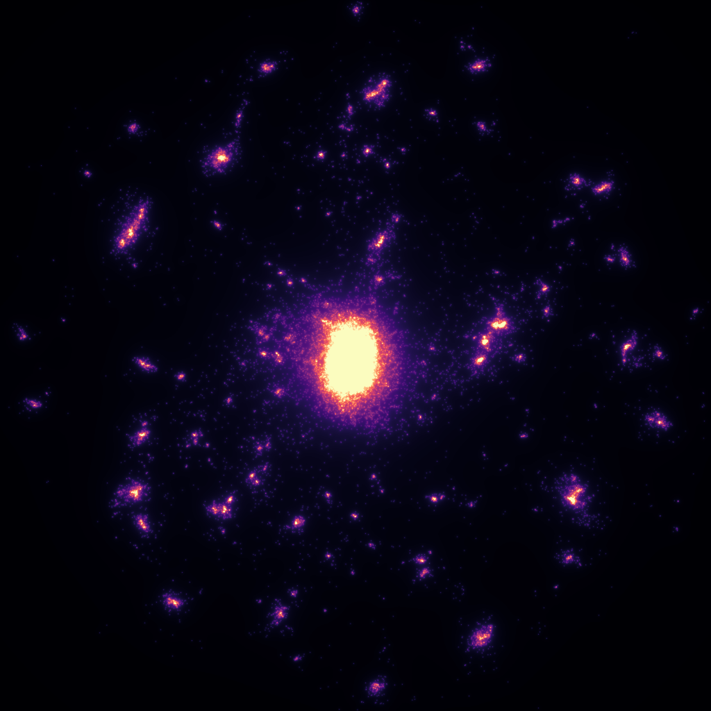
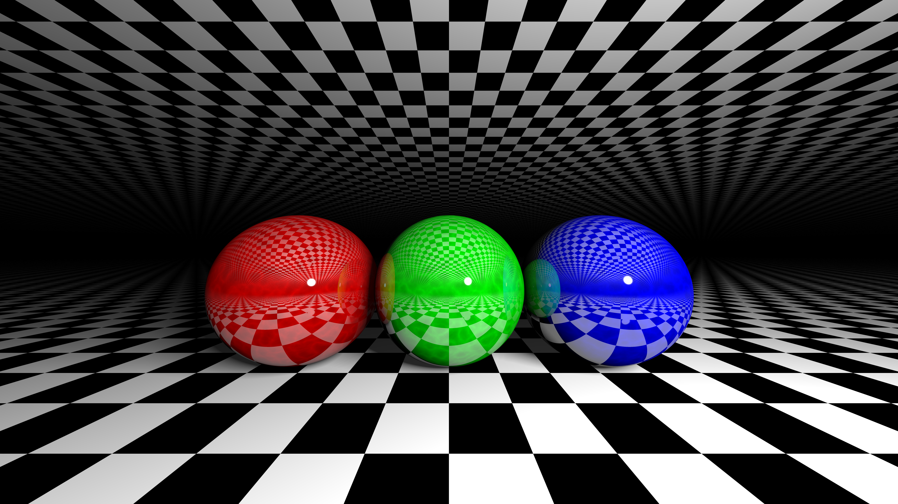
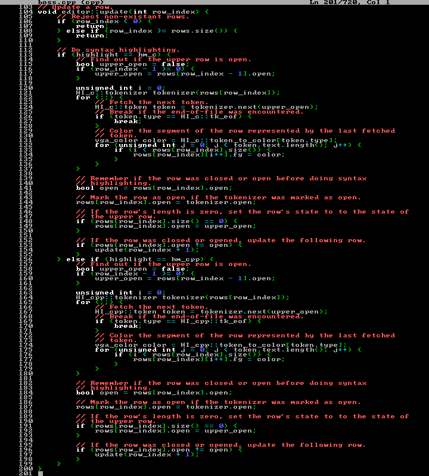

CobaltXII's Home
Hello, I am CobaltXII. You may know me under one of my other Internet nicknames, such as CobaltXII#4538, -Cobalt-, sonicxspriter, or cxii. I am a computer enthusiast who enjoys writing various programs in high-level programming languages such as C and C++. I publish most of my creations on GitHub; lesser programs may be found on GitHub Gists. I am interested in many aspects of computer programming, such as cryptography, networking, emulation, rendering, rasterization, graphical programming, and much more. On this website you will find a list of my better projects. Hopefully you will find something you like.
TL;DR I'm CobaltXII, a hobbyist programmer who makes projects in C and C++. This site was made to showcase some of my better projects.
Major Projects
| Orb | Tiny raytracer written in C++11 |
| Minceraft | A Minecraft clone written in C++11 |
| Planet | A planet generator and renderer written in C++11 using libnoise |
| BOSS | A MS-DOS themed text editor |
| Sterling | A naive pathtracer |
| Cosmos | An OpenCL accelerated n-body simulation |
CobaltXII/sterling

SYNOPSIS
A naive pathtracer
ABSTRACT
Sterling is a naive pathtracer written in C++.
DEPENDENCIES
Sterling uses the following libraries: stb_image_write (Sean T. Barrett), inih (Ben Hoyt), and tinyobjloader (Syoyo Fujita). They are slow to compile, so they are linked at compile time. To compile these libraries, please run the associated shell scripts that can be found alongside the source code.
Sterling also uses GLM for mathematics. GLM is a large (header only) library, and is not included in this repository. You will need to download GLM and add it to the default include path, if you have not done so already.
CREDITS
Thanks to Sean T. Barrett, Ben Hoyt, Syoyo Fujita, Ben Kyd, and UglySwedishFisk.
CobaltXII/minceraft

SYNOPSIS
A Minecraft clone written in C++11
DISCLAIMER
This project and it's author are not affiliated with or supported by Microsoft Corporation or Mojang AB. All of the files in the directory tex/ are the original work and property of Mojang AB. All other files are the original work of the author of this repository, and were not based off of the source code of Minecraft.
LICENSE
This repository and it's contents are licensed under the MIT License.
CobaltXII/cosmos

SYNOPSIS
An OpenCL accelerated n-body simulation
ABSTRACT
Cosmos is an OpenCL accelerated n-body simulator. It can be used to render n-body simulations at a high speed.
USAGE
Using Cosmos is a two step process. First, you must output binary data of the results of a n-body simulation. Second, you render this to a high-resolution image sequence. Cosmos provides two tools for these purposes, cosmos_simulate and cosmos_render. Cosmos also provides cosmos_sketch, used to quickly render ugly videos for testing.
Unfortunately, the Cosmos toolchain does not provide an easy way to tweak initial conditions or parameters. However, it does come with a great set of pre-defined conditions and parameters. If you want to modify these, you will have to edit the source code before compiling. If you want to find places where you can edit parameters, search for the text PARAM in all source files.
CREDITS AND LICENSING
Cosmos is licensed under the MIT License. Thanks to Sean Barrett for creating stb_image_write. Thanks to the Khronos Group for creating OpenCL, which in my experience was a very nice API to work with. Thanks to Stéfan van der Walt and Nathaniel Smith for creating the palette used in thermal_colormap.
CobaltXII/orb

SYNOPSIS
Tiny raytracer written in C++11
ABSTRACT
Orb started out as a weekend raytracing project, but got a little bigger. It currently supports scene files, diffuse lighting, specular lighting, recursion, reflection, refraction, procedural environments, procedural texturing, supersampling, and gamma correction. Orb was originally named Orb because it could only raytrace spheres, but it can now raytrace ellipsoids, planes, capsules, cylinders and cones as well.
LIBRARIES
I make heavy use of Sean T. Barrett's libraries. I also use Ben Hoyt's INI parsing library for loading portable scene files. I also use Syoyo Fujita's Wavefront OBJ parsing library for loading portable model files.
SCENES
There are a bunch of scene files included in this repository that you can look at to see how they work. Every primitive is mentioned at least once, so it should be easy to tweak a few parameters and see what they do. There is no formal documentation, so you will have to take a peek at the code if you get stumped.
CREDITS
Thanks to Inigo Quilez for his great articles and intersector functions. Thanks to Cyrille Favreau for his ellipsoid intersection function. Thanks to Brook Heisler for a great tutorial on getting started with raytracing. Thanks to Ben Hoyt for his great INI library. Without you guys, this project would never have happened, so thanks again!
CobaltXII/planet
SYNOPSIS
A planet generator and renderer written in C++11 using libnoise
ABSTRACT
This repository contains source code for a simple procedural planet generator. The code is written in C++11. The code uses OpenGL 3.3 for hardware graphics acceleration and libnoise for coherent noise generation. The planets start off as an icosahedron. The icosahedron is then subdivided 8 times, after which the icosahedron becomes an icosphere. The vertices are then perturbed by a three-dimensional noise field which creates basins, mountain ranges and water. The elevation of the perturbed vertices is used to determine the color of the vertices. Further preprocessing is applied to create smooth water.
DEPENDENCIES
The code in this repository requires OpenGL 3.3 Core or greater, GLM 0.9.9.3 or greater, libnoise 1.0.0 or greater, and SDL 2.0.9 or greater in order to compile and run successfully. Other dependencies such as GLAD, khrplatform and noiseutils are included in the repository.
COMPILING
Since this project is extremely small, no Makefile or CMakeLists.txt is provided. It should be trivial to compile, just link OpenGL 3.3 Core or greater, SDL 2.0.0 or greater, and libnoise. The source files planet.cpp, glad.c and noiseutils.cpp should be compiled.
LICENSE
This repository and it's contents are licensed under the MIT License.
CobaltXII/boss

SYNOPSIS
A MS-DOS themed text editor
ABSTRACT
BOSS is a text editor written for fun and profit. It is not recommended to use BOSS for serious editing, although it is certainly possible, if tedious. It's source code is meant to be readable, short and functional, so that anybody who wants to modify it for themselves can do so quickly and easily.
DEPENDENCIES
BOSS requires SDL2 and C++11 or greater.
CREDITS
Thanks to Bisqwit for providing the BIOS fonts and the Mario sprite.
LICENSE
This repository and it's contents are licensed under the MIT License.